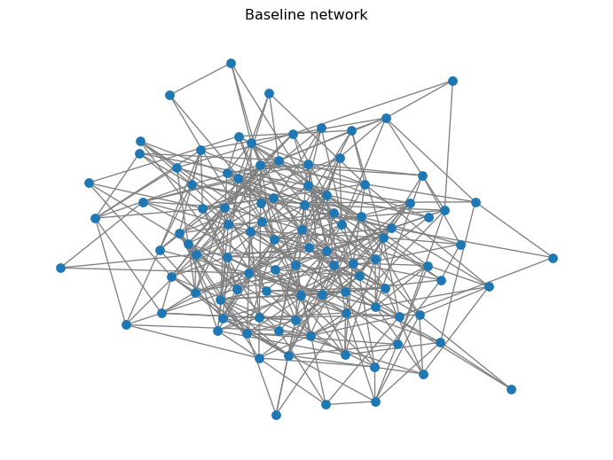
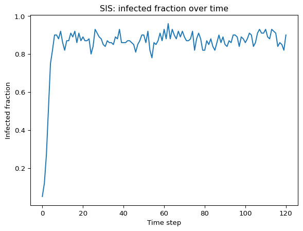
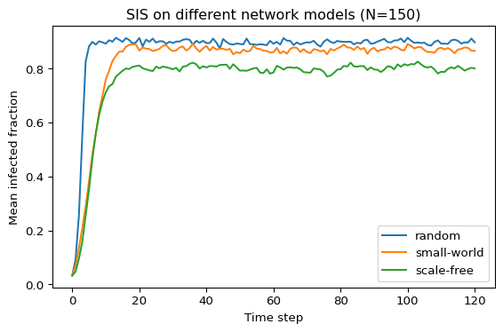

import networkx as nx
import numpy as np
import matplotlib.pyplot as pltNetworks: SIS Model
Guided Exercise
The SIS (Susceptible–Infected–Susceptible) model is a simple epidemic model where individuals can be infected multiple times (Keeling and Rohani 2008; Pastor-Satorras et al. 2015). In this module, we implement SIS on networks using NetworkX and explore how network structure (random vs small-world vs scale-free) changes spreading.
What is the SIS Model?
- States: each node is Susceptible (S) or Infected (I).
- Transitions:
- \(S \to I\): infection through contacts (controlled by \(\beta\)).
- \(I \to S\): recovery (controlled by \(\mu\)).
- No permanent immunity: recovered nodes can be reinfected.
Discrete-Time Update Rule
We simulate in discrete time steps \(t = 0, 1, 2, \dots\).
A susceptible node with \(m\) infected neighbors becomes infected with probability (Keeling and Rohani 2008):
\[ \mathbb{P}(S \to I) = 1 - (1 - \beta)^m. \]
Why \(1 - (1-\beta)^m\)?
If each infected neighbor independently infects you with probability \(\beta\), then the probability you avoid infection from all \(m\) neighbors is \((1-\beta)^m\). So the probability of at least one successful infection is \(1-(1-\beta)^m\).
On the other hand, if a node is infected, it recovers with probability:
\[ \mathbb{P}(I \to S) = \mu. \]
Goal
Study SIS propagation under different graph models and sizes.
- Compare random (Erdos–Rényi), small-world (Watts–Strogatz), and scale-free-ish (Barabási–Albert) graphs.
- Try sizes like \(N \in \{50, 100, 300\}\).
- For each case, run 10–30 repetitions and plot the average infected fraction over time.
The steps are described in more detail below, but feel free to experiment with different parameters and graph types!
Imports and Parameters
These are the parameters you can tune:
SEED = 7
# Model parameters
beta = 0.20 # infection probability per infected neighbor (per step)
mu = 0.10 # recovery probability (per step)
# Simulation parameters
steps = 120 # number of time steps to simulate
initial_infected = 5 # should always be < N
N = 100 # number of nodes in the graph
About
SEED (why we fix it)
There are two sources of randomness in this activity:
- the graph you generate (e.g., which edges appear in Erdős–Rényi), and
- the stochastic SIS dynamics (who gets infected / recovers at each step).
We fix SEED so results are reproducible: rerunning the page gives the same plots, which makes debugging and reporting possible.
When we do many repetitions, we use SEED + r so repetition r is a different random trial (new graph + new random infection events) but still reproducible. If you reused the same SEED in every repetition, you would repeat the same realization and your “average over runs” would be meaningless.
Choose a Network
For your project you will compare several models. Start by picking one. You can see a sample of the three models in the page: Network Models.
Example of Baseline Graph
G = nx.erdos_renyi_graph(n=N, p=0.08, seed=SEED)
# where p is the probability of edge creationTo make the “compare models” part easier, we will implement a small helper function make_graph(<model>, <n>), where <model> is a string specifying the type of graph (“random”, “small-world”, or “scale-free”) and <n> is the number of nodes.
def make_graph(model: str, n: int, seed: int = SEED):
"""Create a graph model: 'random', 'small-world', or 'scale-free'."""
# TODO
return G
Solved:
make_graph()
def make_graph(model: str, n: int, seed: int = SEED):
if model == "random":
return nx.erdos_renyi_graph(n=n, p=0.08, seed=seed)
if model == "small-world":
return nx.watts_strogatz_graph(n=n, k=6, p=0.08, seed=seed)
if model == "scale-free":
return nx.barabasi_albert_graph(n=n, m=2, seed=seed)
raise ValueError("model must be one of: 'random', 'small-world', 'scale-free'")Now you can easily create different graph types:
G = make_graph("random", n=100)
print("N, E =", G.number_of_nodes(), G.number_of_edges())N, E = 100 399Optional quick visualization:
pos = nx.spring_layout(G)
nx.draw(G, pos=pos, node_size=50, edge_color="gray")
plt.title("Baseline network")
plt.show()
Initialize States
We will store the state of each individual directly on the graph as a node attribute called state.
For example, we can start with everyone susceptible. We will create the attribute “state” and set it to “S” for all nodes:
nx.set_node_attributes(G, "S", "state")
print("Node 0:", G.nodes[0]) # node attributes are stored in a dictionaryNode 0: {'state': 'S'}If we wanted to infect node 20, we could do:
node_20 = G.nodes[20]
node_20["state"] = "I"
print("Node 20:", G.nodes[20]) # now node 20 has state "I"Node 20: {'state': 'I'}Alternatively, we could use a dictionary to set the states of multiple nodes at once:
# Infect nodes 20, 35, and 50
# The rest will be susceptible by default
state_dict = {node: "I" if node in [20, 35, 50] else "S" for node in G.nodes()}
nx.set_node_attributes(G, state_dict, "state")
print("Node 20:", G.nodes[20]) # node 20 is infected
print("Node 21:", G.nodes[21]) # node 21 is susceptibleNode 20: {'state': 'I'}
Node 21: {'state': 'S'}With that information in mind, you can create a function initialize_state(<graph>) that sets all nodes to “S” and then randomly picks a few nodes to set to “I” (the initial infected).
def initialize_state(G, initial_infected=5, seed=SEED):
# TODO: start everyone as 'S' using node attributes
# TODO: randomly pick initial_infected nodes and set their node attribute to 'I'
# Optional: return G (mutated) for convenience
return GRemember that you can use a seeded random number generator (via np.random.default_rng(seed)) to pick random nodes from the graph.
Solved:
initialize_state()
def initialize_state(G, initial_infected=5, seed=SEED, rng=None):
if rng is None:
rng = np.random.default_rng(seed)
# Start everyone susceptible
nx.set_node_attributes(G, "S", "state")
# Infect a random subset
infected = rng.choice(list(G.nodes()), size=initial_infected, replace=False)
for node in infected:
G.nodes[node]["state"] = "I"
return GAlways validate your functions! In this case, we can check that the number of infected nodes is correct:
initialize_state(G, initial_infected=initial_infected, seed=SEED)
print(
"Initially infected:",
sum(G.nodes[node]["state"] == "I" for node in G.nodes()),
)Initially infected: 5Implement the SIS dynamics
We update synchronously: compute all changes from the old state, then apply them.
Create a function step_sis(<graph>, beta, mu) that performs one step of the SIS update. Remember that beta is the infection probability and mu is the recovery probability.
def step_sis(G, beta, mu):
# TODO: read current states from G.nodes[u]["state"]
# TODO: compute a new_state mapping (synchronous update)
# TODO: write new_state back to node attributes
return GRemember that you can loop through all nodes and their neighbors using G.nodes() and G.neighbors(node). Use np.random.random() for the probabilistic transitions.
Solved:
step_sis()
def step_sis(G, beta, mu, rng=None):
if rng is None:
rng = np.random.default_rng()
# Retrieve current states of all nodes
current = {node: G.nodes[node]["state"] for node in G.nodes()}
new_state = current.copy() # start with the same state for synchronous update
# Loop through all nodes to compute new states
for node in G.nodes():
if current[node] == "S":
# Count infected neighbors
m = sum(1 for nbr in G.neighbors(node) if current[nbr] == "I")
if m > 0:
# Compute infection probability
p_infect = 1 - (1 - beta) ** m
if rng.random() < p_infect:
new_state[node] = "I"
else: # current[node] == "I"
if rng.random() < mu:
new_state[node] = "S"
nx.set_node_attributes(G, new_state, "state")
return GNow wrap it into a simulator that records the number of infected nodes over time. The function run_sis() should take a graph and the parameters, run the simulation for a given number of steps, and return a list of the number of infected nodes at each time step.
def run_sis(G, beta, mu, steps=100, initial_infected=5, seed=SEED):
# TODO
return infected_counts
Solved:
run_sis()
def run_sis(G, beta, mu, steps=100, initial_infected=5, seed=SEED):
# Copy the graph to avoid mutating the original
H = G.copy()
# One seeded RNG controls all randomness for this run
rng = np.random.default_rng(seed)
# Initialize states
initialize_state(H, initial_infected=initial_infected, seed=seed, rng=rng)
# Count initial number of infected nodes and initialize the list
infected_counts = [sum(H.nodes[node]["state"] == "I" for node in H.nodes())]
# Apply SIS steps and record infected counts
for _ in range(steps):
step_sis(H, beta=beta, mu=mu, rng=rng)
infected_counts.append(sum(H.nodes[node]["state"] == "I" for node in H.nodes()))
return infected_countsExecute the function to make sure it runs without errors and returns a reasonable output:
counts = run_sis(G, beta=beta, mu=mu, steps=steps, initial_infected=initial_infected)
print("Infected counts over time:", counts)Infected counts over time: [5, 12, 27, 51, 75, 82, 90, 90, 88, 92, 86, 82, 87, 87, 91, 89, 92, 86, 91, 87, 89, 87, 87, 88, 80, 84, 93, 91, 89, 88, 85, 84, 87, 86, 86, 85, 89, 88, 93, 86, 86, 86, 87, 87, 86, 85, 81, 85, 87, 90, 90, 86, 92, 82, 78, 86, 85, 87, 91, 87, 93, 88, 96, 88, 93, 90, 88, 92, 89, 92, 89, 87, 87, 88, 92, 82, 88, 91, 88, 82, 82, 87, 85, 88, 84, 82, 86, 90, 86, 89, 85, 84, 87, 86, 90, 90, 89, 84, 89, 88, 86, 88, 91, 90, 84, 86, 91, 93, 91, 91, 93, 89, 88, 93, 92, 91, 84, 86, 85, 82, 90]Run and Visualize
Use matplotlib to plot the fraction of infected nodes over time. Try to get a graph similar to Figure 1 below.

Compare Network Types
Finally, run multiple simulations for each graph type and plot the average infected fraction over time for each type on the same graph. Figure 2 is an example of what this could look like.

Discuss
Use your results to start a discussion:
- Which network type sustains infection longer at the same \((\beta, \mu)\)?
- Do hubs (scale-free) make persistence easier? Why?
- How does clustering (small-world) change local outbreaks vs global spread?
- If you increase \(N\) but keep average degree similar, what do you expect to happen?
What’s Next?
Try the SIR model and compare how permanent immunity changes the outcome.
References
Keeling, Matt J., and Pejman Rohani. 2008. Modeling Infectious Diseases in Humans and Animals. Princeton University Press.
Pastor-Satorras, Romualdo, Claudio Castellano, Piet Van Mieghem, and Alessandro Vespignani. 2015. “Epidemic Processes in Complex Networks.” Reviews of Modern Physics 87 (3): 925–79. https://doi.org/10.1103/RevModPhys.87.925.